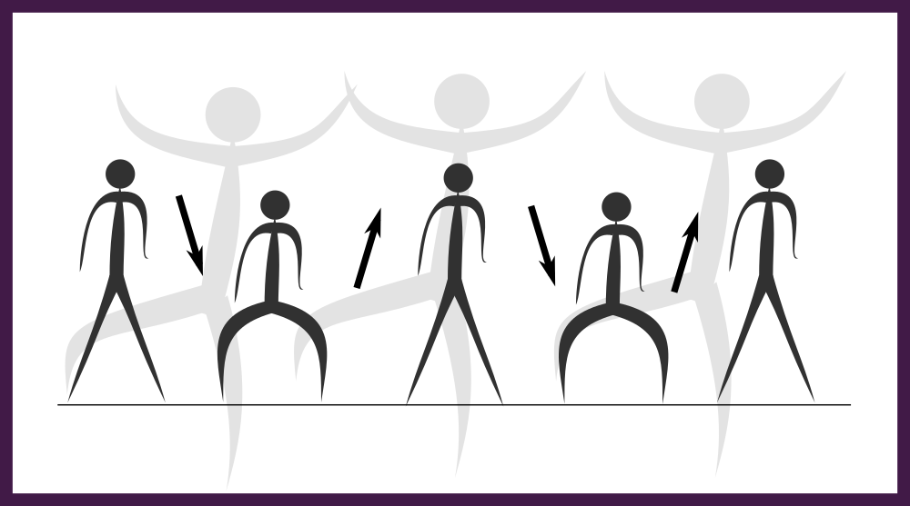
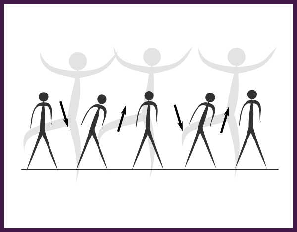
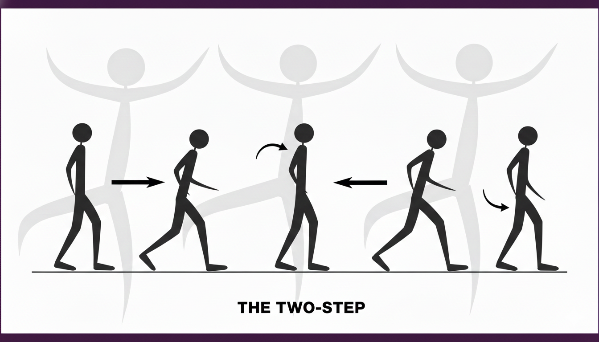
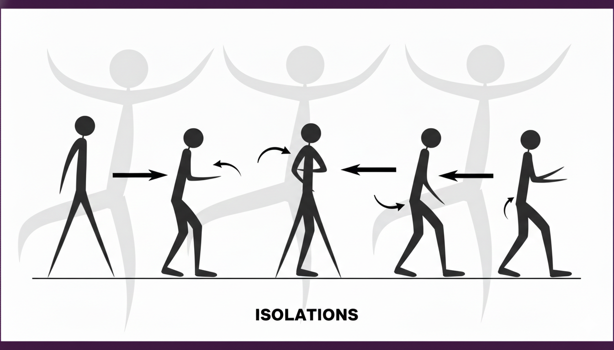
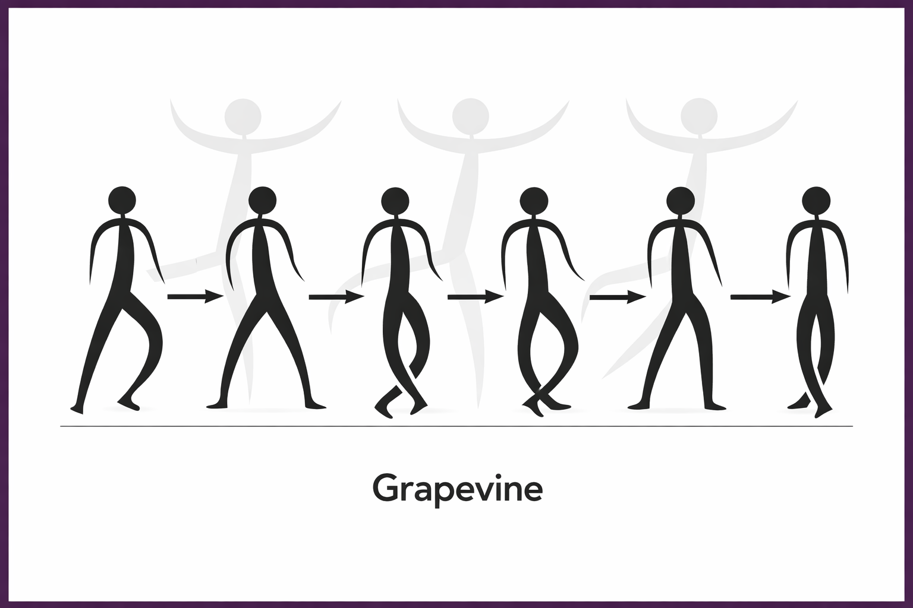

Bounce
BásicoEs el movimiento de muelleo (arriba y abajo) flexionando las rodillas. Es la base para mantener el tiempo. Imagina que tienes muelles en las rodillas. Con los pies un poco más abiertos que el ancho de tus hombros, deja caer el peso relajando las rodillas rítmicamente. El cuerpo debe ir hacia abajo (down-bounce). No es un salto, es un peso muerto que rebota.
Ver Tutorial

Rocking
BásicoUn balanceo del torso de adelante hacia atrás, similar al movimiento que se hace de forma natural al escuchar música.Imagina que alguien te empuja suavemente el pecho hacia atrás y luego tú recuperas la posición. El movimiento nace del torso y la pelvis, creando una onda constante que te ayuda a fluir entre pasos.
Ver Tutorial

The Mouse
BásicoJunta un poco los pies. El movimiento consiste en mover los talones hacia afuera y luego las puntas hacia afuera de forma muy rápida y pequeña, como si tus pies "corrieran" por el suelo de lado a lado sin despegarse apenas de él. Se ve muy nervioso y ágil.
Ver Tutorial

Running Man
Básico
La clave es el deslizamiento. Mientras una rodilla sube, el pie que está en el suelo se desliza hacia atrás. Al bajar el pie que estaba arriba, el otro vuelve al centro.
1.- Sube una rodilla a la altura de la cadera.
2.- Mientras bajas ese pie al suelo, el otro pie (el que estaba apoyado) debe deslizarse hacia atrás.
3.- Ahora sube la otra rodilla y repite. Parece que corres, pero te quedas en el sitio.
Ver Tutorial

Criss Cross
BásicoEs un salto rítmico que consiste en abrir y cerrar las piernas alternativamente: en el primer pulso saltas abriendo los pies hacia los lados y, en el segundo, saltas de nuevo cruzando un pie por delante del otro. Es fundamental mantener el peso en las puntas de los pies y coordinar el cruce (derecha delante, abrir, izquierda delante) para crear un efecto visual de tijera constante.
Ver Tutorial

Two-Step
BásicoEl Two-Step es precisamente eso: un sencillo movimiento de lado a lado ideal para cualquier canción. Este movimiento, con su técnica desestructurada y su ritmo desenfadado, es un paso fundamental en el baile social. Si no quieres hacer una rutina de baile completa, pero quieres bailar al ritmo de la música, el Two-Step es una buena opción. Las instrucciones del Two-Step están en su nombre. Sólo tienes que dar un paso de lado a lado, hacia delante y hacia atrás. Ver Tutorial

Box Step
BásicoEl Box Step (o paso de cuadro) es un movimiento estructural que dibuja un cuadrado imaginario en el suelo con los pies. Se ejecuta en cuatro tiempos: cruzas el pie derecho sobre el izquierdo, das un paso atrás con el izquierdo, abres el derecho hacia su lado original y finalmente juntas el izquierdo para cerrar el cuadro. Es un paso de nivel Básico fundamental en la danza porque enseña control espacial y transferencia de peso. Ver Tutorial

Step Touch
BásicoPara ejecutarlo, simplemente da un paso lateral con el pie derecho (Step) y luego acerca el pie izquierdo hasta que la punta toque el suelo junto al derecho (Touch), sin llegar a transferirle todo el peso. Inmediatamente, repite el proceso hacia el lado contrario: paso con el izquierdo y toque con el derecho. Ver Tutorial

Moonwalk
Técnica de deslizamiento que crea la ilusión óptica de que el bailarín se mueve hacia adelante mientras camina hacia atrás. Popularizado por Michael Jackson, requiere un control preciso del peso en los metatarsos.
Ver Tutorial

The Wave
Piensa en la Ola como la versión horizontal del Body Roll. En la Onda, todo está en los brazos. Empieza con las puntas de los dedos de un lado y gira el brazo en un movimiento ondulatorio hasta el final del hombro. Luego, sigue el movimiento inverso con el otro brazo, terminando en la punta de los dedos. Las mejores Ondas crean la ilusión de que tus dos brazos están conectados entre sí, sin cuerpo de por medio.
Ver Tutorial

Six Step
El movimiento fundamental del footwork en el Breaking. Consiste en una secuencia de seis pasos circulares en el suelo, utilizando las manos como apoyo y las piernas para crear una rotación fluida alrededor del eje central.
Ver Tutorial

Isolaciones
Imagina que una pared invisible te bloquea todo el cuerpo excepto una parte. Por ejemplo, intenta mover solo el pecho hacia adelante y hacia atrás sin que los hombros se suban ni la cadera se mueva. Es un movimiento "robótico" y limpio.
Ver Tutorial

Body Roll
Para ejecutar un Body Roll perfecto, comienza proyectando la barbilla hacia adelante para guiar el movimiento, y luego traslada esa energía al pecho expandiéndolo hacia el frente. A medida que el pecho retrocede, empuja el abdomen hacia afuera y finaliza la onda metiendo el ombligo y basculando la pelvis hacia adelante mientras flexionas ligeramente las rodillas. La clave es la fluidez: cada parte del cuerpo debe "activarse" justo cuando la anterior regresa a su posición neutral, creando una sensación de onda ininterrumpida que recorre tu columna verticalmente.
Ver Tutorial

Grapevine
Si quieres un movimiento de baile para principiantes con una coreografía sencilla, considera el Grapevine. Esta secuencia básica consiste en dar un paso hacia un lado, cruzar el otro pie por detrás y luego juntar los pies. El resultado es una cadena de pasos que, repetidos, pueden llevarte de un extremo a otro de la sala. El Grapevine se practica mejor en grupo, por lo que es una buena opción para bailar en línea en una fiesta. Ver Tutorial

Mopacho
El Mopacho es un paso de Afro Dance de alta intensidad que se basa en un rebote (bounce) rítmico de rodillas mientras el pecho se expande y los brazos realizan un movimiento circular de "barrido" hacia afuera. Es un paso de "vacile" y pura energía, popularizado por grupos como los Loonietoons, que requiere gran coordinación y stamina para mantener el flujo constante entre el torso y las extremidades al ritmo del Afrobeat.
Ver Tutorial